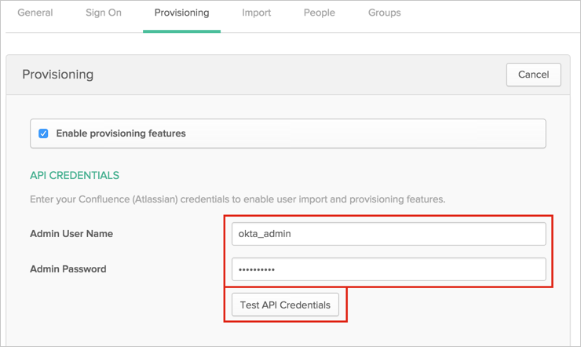
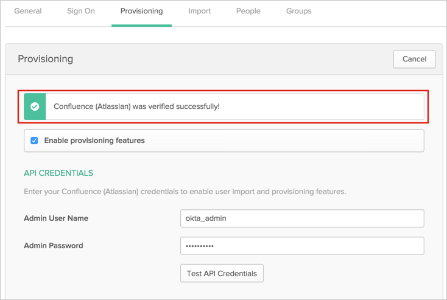
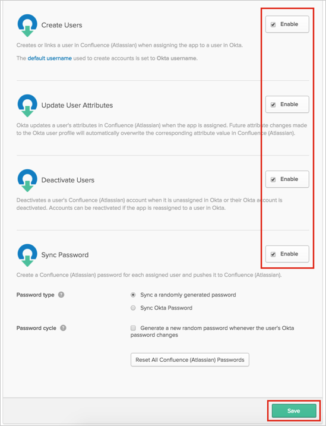
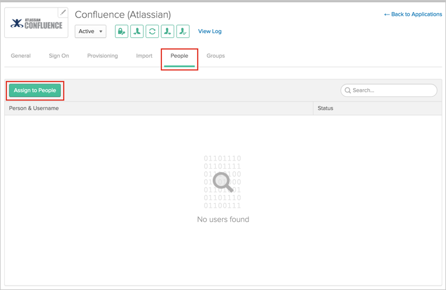
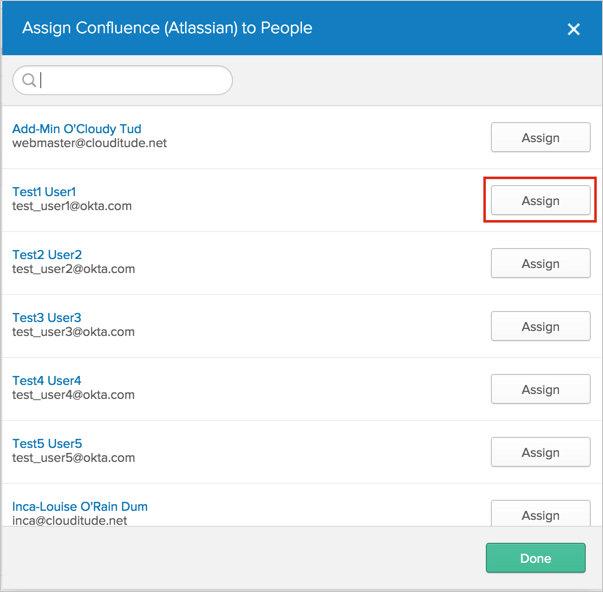
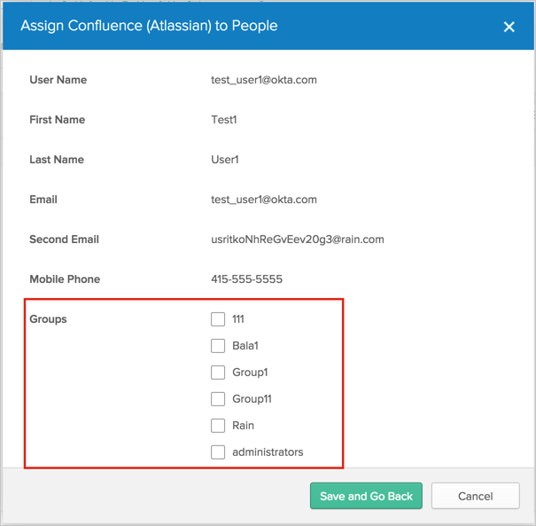

This guide provides the steps required to configure Provisioning for Confluence.
Note
If you want to use REST API instead of SOAP API to create users in Confluence, contact Okta Support and ask them to enable the CONFLUENCE_APP_REST_API feature flag.
The following provisioning features are supported:
Push New Users
New users created through OKTA will also be created in the third party application.
Push Profile Updates
Updates made to the user's profile through OKTA will be pushed to the third party application.
Push Password Updates
Updates made to the user's password through OKTA will be pushed to the third party application.
Import New Users
New users created in the third party application will be downloaded and turned in to new AppUser objects, for matching against existing OKTA users.
Import Profile Updates
Configure your Provisioning settings for Confluence as follows:
Check the Enable provisioning features box.
Enter your Confluence API Credentials:
Admin User Name: Enter an admin user name, with user management permissions.
Admin Password: Enter a password for your admin user (above).

Click Test API Credentials. If your credentials are valid, you will see a success message:

Scroll down and enable the Provisioning Features you want to use for this app.

Click Save.
You can now assign people to the app, if needed (see below).
To assign users to the Confluence (Atlassian) app, open the app, select the People tab, then click the Assign to People button:

In the Assign Confluence (Atlassian) to People dialog, select a user, then click the Assign button:

You can then select Groups for the user:

Confluence (Atlassian) does not support User's Schema Discovery.